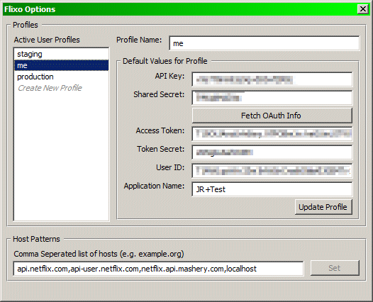
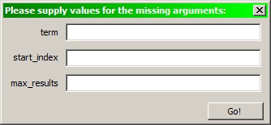

Flixo does a few things to make your life a bit easier.
Flixo is very much a work in progress and I'd love to hear your complaints and ideas.
To install Flixo, simply grab the flixo.xpi file and drop it onto Firefox. This product is still in development, and unfortunately, updates cannot be automatically provided. Please check the Flixo website for updates at this time.
This is where you create profiles for Flixo to use. It's important to create at least one profile before using Flixo. To do so, click "Create New Profile" in the Active User Profiles section.

Once you make any changes or additions, remember to click the button to save your work.
This is a comma separated list of the root hosts where Flixo should sign requests. These are matched using a regular expression, so be careful how you enter the host. (e.g. 'netflix.com' would match against any *.netflix.com host.)
As with the Profiles section, Click to save your changes.
This is a list of the created Profiles. You can select the profile you wish to make active by clicking on it. The Active profile is marked with a radio button dot next to the name.
This allows you to determine what level of Auth information to send out.
For catalog queries that have "expandable" elements, provide the list of items to automatically expand.
Return the results as Plain ol' XML, JSON, Atom XML format or Atom
Just a handy set of links to jump to. Top of API list, the User branch or the Catalog branch.
If you select a link, and right click (or bring up the context menu), you'll see an option to "flixotize" the link. (make sure you select the entire link.)
Flixotizing a link will ask to substitute variables in the template (if any exist) and load it to the current window. This will autosign the URL for you.
As your reward for getting through this much of the document (and my hurried writing) let me reward you with the secret debugging values you can set in about:confg.
All values are of type "Boolean" unless otherwise noted:
| Option | default | function |
|---|---|---|
| extensions.flixo@netflix.com.debug | false | set true to turn on debugging. Debugging output is sent to the javascript console. This can be QUITE verbose and WILL slow down calls using Flixo. |
| extensions.flixo@netflix.com.oauthInHeaders | true | set true to include the OAuth information in the outbound headers. Set to false to include the OAuth info in the URL. |
| extensions.flixo@netflix.com.oauth_plaintext | false | set true to sign the requests using OAuth PLAINTEXT signatures. (Currently, such requests are rejected, but it's useful for debugging.) |